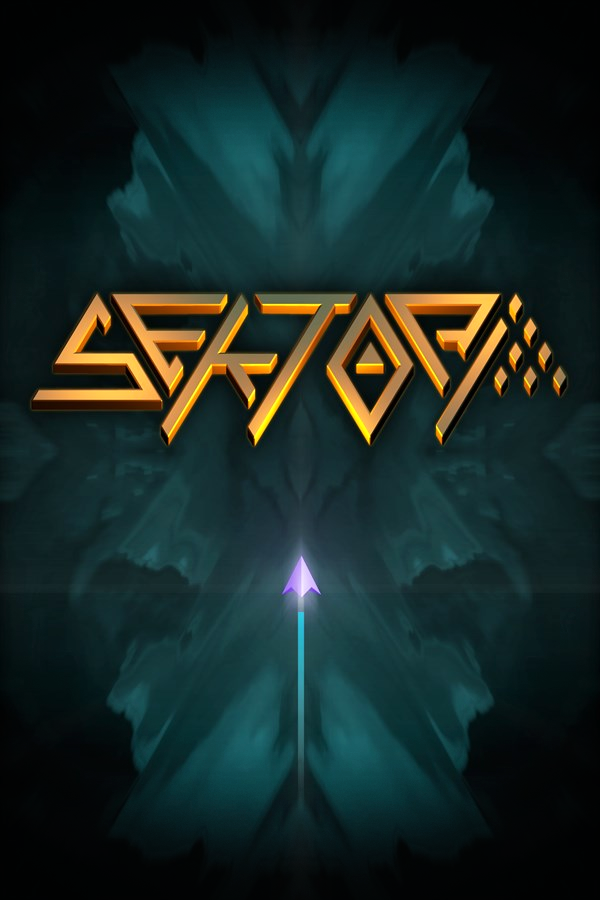

Sektori
Every archived year-end list appearance, including placement and points earned.
About the Game
SEKTORISektori is an intense, fast paced twin-stick shooter infused with hard hitting techno music. Choose your upgrades carefully and create powerful builds to take on the relentless enemies and epic bosses on a constantly evolving battlefield. Sektori is a game that requires your complete focus, a game where the high-adrenaline visuals, music, and gameplay come together to transport you into another state of consciousness.Simple, pure gameplay. Quick runs. Lots of challenge and replayability.FEATURESA five world campaign mode with dynamically changing levels and tons of enemy variation - including epic evolving bossesAlternate ships and configurable upgrade decks to mold your run withThree difficulty modes suited for all players, including a "Revolution" campaign mode for maximal challengeSix alternate game modes, like Classic, Gates and AssaultVaried selection of challenges and medals to reach forDEVELOPER NOTESWith Sektori I wanted to create a shoot'em up where every run feels familiar, but is still completely unique. A game of skill, not memorization. The hand crafted attack waves, levels and even the bosses are combined, randomized and layered with the upgrade systems in a way that creates an interesting challenge for every run. The aesthetics of the game are very much inspired by techno music. Fast, detailed, colorful, saturated, intense, aggressive.Dive in, take on the challenge as it comes and have fun!WARNINGThis game contains flashing lights that may make it unsuitable for people with photosensitive epilepsy or other photosensitive conditions. Player discretion is advised.
| Released | 2025-11-18 |
|---|---|
| Developer | Kimmo Lahtinen |
| Publisher | Kimmo Factor Oy |
| Genres | Action |
| Platforms | PC |
SingleplayerSteam AchievementsFull controller supportSteam CloudGreat SoundtrackSteam LeaderboardsController3DColorfulcombatFuturisticTop-Down
Where to Buy
Game information provided by RAWG.
Points by Year
List History
| Year | Source | List | Placement | Points |
|---|---|---|---|---|
| 2025 | Ars Technica | Ars Technica’s Top 20 video games of 2025 | Unranked | 3 |
| 2025 | Eurogamer | The 50 best games of 2025, ranked | 13 | 3 |
| 2025 | SUPERJUMP | 50 Outstanding Games Released in 2025 | Unranked | 1 |